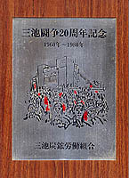

展示品１
 「三池闘争20周年記念」盾 （提供 藤田さん）
1960年の三井三池労働争議から20年後の1980年に三池労組が制作した。 たて30センチ、よこ21センチ大。
1980年と言えば、産炭地域振興臨時措置法が10年再延長を答申された年でもある。「産炭地域振興臨時措置法」とは、1960年代、全国で相次いだ炭鉱の閉山で、 産炭地域に多数の失業者と地域経済の沈滞を引き起こしたことに対する対策として、国が産炭地域への企業誘致、地元自治体への財政援助などを行なうための 臨時的な措置法。
展示品２
「組合結成30周年記念」盾 （提供 藤田さん）
1946年の三池炭鉱労働組合結成から30年後の1976年に三池労組が 制作した。たて23センチ、よこ18センチ大。
1976年と言えば、福島および茨城両県にまたがっていた常磐炭鉱、福岡県の貝島炭鉱という大手炭鉱の閉山が相次いだ年でもある。
また、多数の死傷者を出した3月の東アジア反日武装戦線による道庁爆破事件、7月の田中前首相（故人）逮捕事件、9月のソ連軍ミグ25函館空港亡命強行着陸、 そして同じ月、毛沢東主席の死去という社会的なニュースが相次いだ年でもあった。